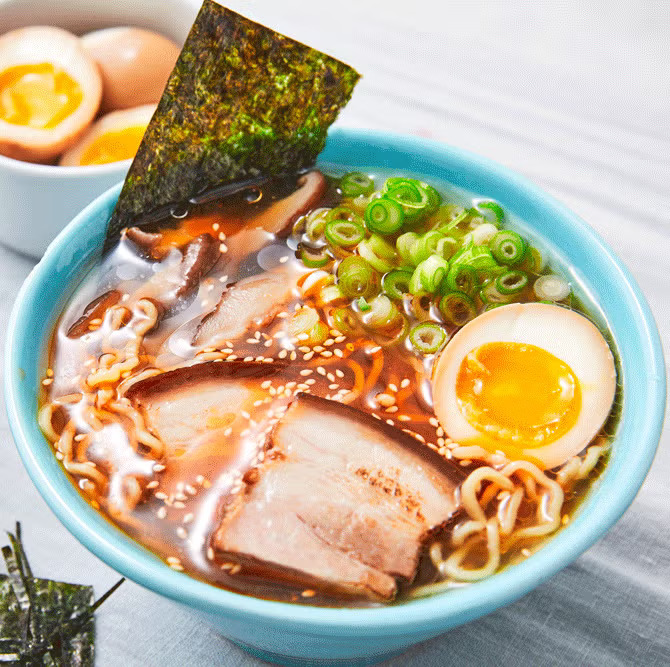

Ingredients
- Noodles: Preferrably ramen noodles
- Spices: Garlic/ Ginger
- Broth: Chicken or Veg Broth
- Mushroom: Dried Shitake Mushroooms
- Veggies: Carrots/ Kale
- Toppings: Egg/ Chili Oil/ Pork
How to do
- Stir-Fry The Aromatics: Garlic and ginger, what a delicious duo. This is where the flavor is, friends.
- Make Your (Easy!) Broth: Add some chicken broth and dried shiitake mushrooms for some umami punch.
- Add Noodles: Cook your noodles right in the broth with some scallions (more flavor, please!).
- Add Veg: Thinly sliced kale, shredded carrots, whatever you’d like! Cook until just tender.
- Top It Off: Add some crunchy panko crumbs, a soft-boiled egg, chili oil, hot sauce, sesame oil, and/or soy sauce, whatever your heart desires.